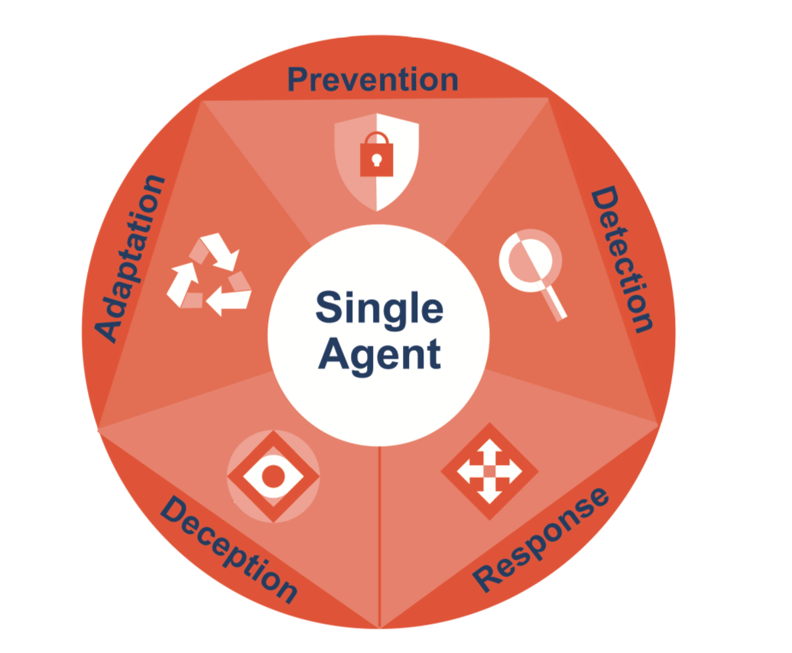

Endpoint Telemetry
Process, file, registry, network, and honeypot events from lightweight SME endpoints.
Project 25-26J-076 | Cyber Security
A commercial-ready security platform concept that turns endpoint telemetry, deception events, AI risk scoring, tamper-evident evidence, and SOAR-style actions into a single SME-friendly workflow.
Process, file, registry, network, and honeypot events from lightweight SME endpoints.
Log normalization, behavioral features, anomaly confidence, and threat intelligence enrichment.
Isolation Forest and LSTM autoencoder concepts for point and sequence anomalies.
Explainable alerts, MITRE mapping, recommended playbooks, and business-readable reports.
Enterprise SIEM, EDR, and SOAR platforms can be complex to deploy, expensive to operate, and difficult for non-specialists to interpret.
Panel feedback makes the direction clear: do not rely on affordability alone. Show readable AI, dynamic SOAR, cloud readiness, and trustworthy logs.
ForLens is framed as a per-endpoint SaaS product with endpoint telemetry, AI scoring, response automation, and incident reporting.
Product Experience
ForLens Cloud is presented as an operational workflow so SME owners, managers, and small IT teams can understand what data enters the platform, how detection works, what response actions are available, and how evidence is verified.
ForLens collects process execution, file access, registry/config changes, network connections, and deception interactions, then forwards telemetry over a secure cloud-ready API.
Confidence 91%. The behavioral engine combines ML anomaly scoring, threat intelligence hits, honeypot context, and MITRE ATT&CK mapping so analysts can see why the event matters.
The dashboard supports one-click response for SME users who do not have dedicated SOC teams. Playbooks can isolate endpoints, terminate suspicious processes, block malicious IPs, and notify admins.
Cryptographic chunking and digest verification make tampering visible. This directly supports the final demo requirement for a clearer log-tamper demonstration.
Managers receive severity, affected host, action taken, recovery status, and next steps. MSPs can use the same reporting layer for multiple SME clients.
Market Position
Panel feedback highlighted that affordability alone is not a strong research gap. The site now positions ForLens around explainable insider-threat detection, dynamic SOAR guidance, cloud-ready operations, and trustworthy forensic evidence.
Product Modules
This section gives a quick buyer-facing summary of the four major deliverables that make up the ForLens platform.
Collects process, file, and network telemetry while using decoys to expose early attacker behavior on SME endpoints.

Uses anomaly detection, threat intelligence, and MITRE ATT&CK mapping to convert noisy activity into explainable alerts.
Preserves forensic trust with cryptographic log protection and clear verification evidence for incident review.

Guides non-specialist users through isolate, block, terminate, notify, and report actions from a centralized dashboard.
Platform Capabilities
This section goes deeper into operating behavior, validation targets, and commercial value so visitors can understand how each module contributes during a real incident.

Runs lightweight monitoring, captures process/file/network activity, and uses decoys to expose early attacker behavior before real assets are reached.

Why It Matters
ForLens is designed for environments without a full SOC. The product experience emphasizes readable severity, confidence, rationale, recommended playbooks, admin notifications, and business reporting.

Integrated Offer
The commercial story keeps each member's contribution visible while presenting the final output as a unified endpoint security solution for SMEs and managed service providers.